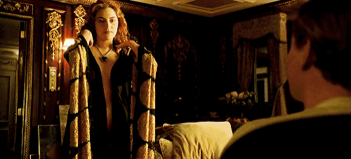
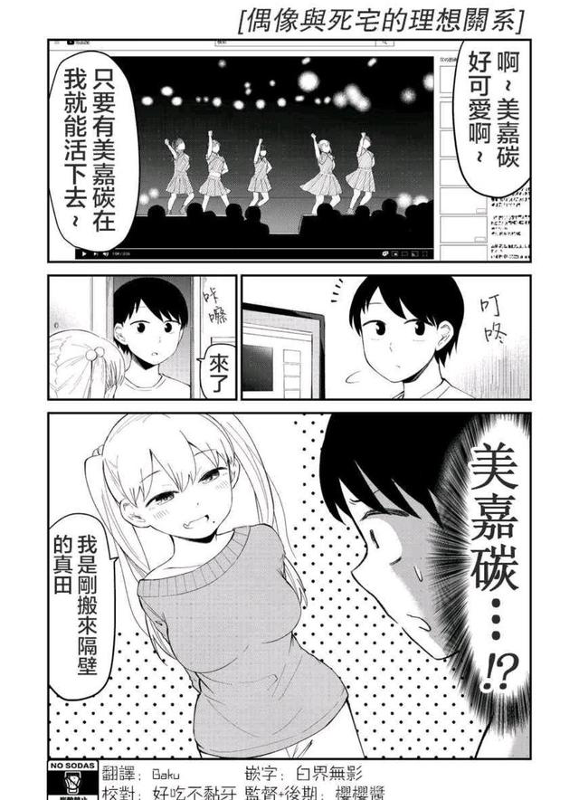

男性凝视
Male Ｇａｚｅ
男性凝视，在女性主义理论中，男性凝视指在视觉艺术和在文学创作中，从男异性恋者的角度描绘女性和现实，将女性客体化以取悦异性恋男性观众的行为，即以男性的、异性恋的观点，把女性视为性对象来表现或再现，满足异性恋男性观看的愉悦。
The male gaze, in feminist theory, refers to the act of depicting women and reality from the perspective of male heterosexuals in visual art and literary creation, objectifying women to please heterosexual male audiences, i.e., representing or reproducing women as sexual objects from a masculine, heterosexual point of view to satisfy the viewing pleasure of heterosexual men.

在英国女性主义电影理论家罗拉穆维提出「性别不平等」——即男人和女人社会和政治权利的不对称性，对于电影中男人和女人的呈现是有着控制性的社会力量。男性凝視（男性观者的审美情趣）是一种社会结构，根源自父权体系下的思想与话语。
British feminist film theorist Lola Mulvey suggested that "gender inequality"-the asymmetry of men's and women's social and political rights- is a controlling social force for the presentation of men and women in film. The male gaze (the aesthetic sensibility of the male viewer) is a social construct rooted in the ideas and discourses of a patriarchal system.
